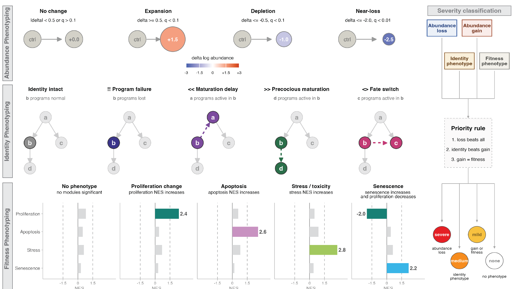

Transcriptional phenotyping
Once we've computed DEGs for a perturbation, the natural next question is: what is the phenotype? Which cell states are genuinely required for a genotype, as opposed to just downstream casualties of some earlier loss? And beyond abundance — is a cell state still present, but not quite itself anymore (delayed, precocious, stressed, or partially misspecified)?
Platt's phenotyping functions turn these per-gene, per-cell-state statistics into calls that summarize an entire perturbation at a glance, and then draw those calls directly on the lineage graph. This replaces the older DvEG (deviantly-expressed genes) workflow, which compared perturbation DEGs against reference DEGs directly — transcriptional phenotyping folds that same question into a broader, graph-topology-aware view of a perturbation's phenotype.

For more information on DEGs, see our Reference DEGs and Perturbation DEGs pages.
Categorizing genetic requirements
The first question to ask of a perturbation is which cell states are lost, and whether that loss is a direct requirement or an indirect consequence of losing an earlier state in the lineage. categorize_genetic_requirements() answers this using the state graph's topology: for each perturbation, it takes the cell states flagged as lost (is_lost_when_present) and looks at where they sit in the lineage. A lost cell state with no lost parent upstream of it in the graph is called directly lost; a lost cell state whose loss can be explained by an already-lost parent is called indirectly lost.
perturb_ccm_tbl- a tibble of fitted genotype models, one row per perturbation, with aperturb_summary_tbllist-column (the per-cell-state loss summary, e.g. from a table offit_genotype_ccm()results)state_graph- anigraphobject describing the lineage relationships among cell states
genetic_requirements = categorize_genetic_requirements(perturb_ccm_tbl, muscle_state_graph@graph)
genetic_requirements %>% head()
| id | perturb_name | perturb_effect |
|---|---|---|
| paraxial mesoderm (tbx16+) | tbx16,msgn1 | direct |
| fast-committed myocyte, pre-fusion | tbx16,msgn1 | indirect |
| fast-committed myocyte, fusing (pcdh7b+) | tbx16,msgn1 | indirect |
In the tbx16-msgn1 crispant, paraxial mesoderm progenitors are directly required — they're lost with no lost parent upstream of them in the graph — while the fast muscle fates downstream are only indirectly lost, as a consequence of losing their progenitor pool.
From impact calls to phenotype glyphs
Abundance loss is only one axis of a phenotype. A cell state can persist in normal numbers and still show a transcriptional identity defect (a maturation delay, a fate switch, a program failure) or fitness-related stress (apoptotic, senescent, or stress-pathway signatures). Platt represents this richer, per-cell-type summary as an impact table — one row per cell type, with categorical calls for abundance, identity, and fitness that are typically assembled upstream from your DEG/DvEG/abundance evidence for a genotype. At minimum, an impact table needs:
cell_type- the cell state being annotatedabundance_code- one of"A0 No change","A1 Expansion","A2 Depletion","A3 Ablation/Loss","A4 Ectopic/extra state"abundance_severity-"none","mild","moderate", or"severe"identity_label- a call describing the transcriptional identity of the state (identity intact, maturation delay, precocious maturation, program failure, fate switch/misspecification, identity fragmentation)fitness_label- a free-text label capturing fitness-related evidence (e.g. mentioning apoptosis, stress, or senescence)
tbx16_impact_table = tibble::tibble(
cell_type = c("paraxial mesoderm (tbx16+)",
"fast-committed myocyte, pre-fusion",
"head and neck mesoderm (pax3+, pax7+)"),
abundance_code = c("A3 Ablation/Loss", "A2 Depletion", "A1 Expansion"),
abundance_severity = c("severe", "moderate", "mild"),
identity_label = c("I0 Identity intact", "I3 Program failure within identity", "I0 Identity intact"),
fitness_label = c("F2 apoptosis", "none", "none")
)
impact_to_phenos() translates that impact table into the standardized fields the plotting layer expects — an abundance log2FC proxy (from abundance_code x abundance_severity), a compact identity code and glyph string (e.g. "!!" for program failure), and fitness axes for direction, apoptosis, stress score, and senescence:
impact_table- the data frame described abovesev_map- severity label -> magnitude, used to build the abundance proxyabundance_code_map- abundance code -> signed direction/magnitudeidentity_glyph_map- identity label -> glyph string
tbx16_phenos = impact_to_phenos(tbx16_impact_table)
tbx16_phenos %>% select(cell_group, abundance_code, abundance_log2fc, identity_glyph, F2_apoptosis)
You won't usually call impact_to_phenos() directly, though — plot_phenotypes_from_impact() calls it for you as its first step.
Plotting phenotype calls on the graph
plot_phenotypes_from_impact() is the entrypoint you'll reach for most often: hand it your cell_state_graph and an impact table, and it converts the table with impact_to_phenos() and renders the annotated lineage graph in one call:
cell_state_graph- a plattcell_state_graphobjectimpact_table- the impact table described aboveshow_node_labels- label the cell states...- additional arguments forwarded toplot_phenotypes_glyphs()
plot_phenotypes_from_impact(muscle_state_graph,
tbx16_impact_table,
show_node_labels = TRUE)
Each node's fill encodes the abundance call (expansion, depletion, or ablation/loss), and a short bold glyph is drawn on top of the node to encode the identity call — "" for identity intact, "<<" for a maturation delay, ">>" for precocious maturation, "!!" for a program failure within identity, "<>" for a fate switch or misspecification, and "##" for identity fragmentation. In the tbx16-msgn1 crispant above, paraxial mesoderm progenitors are lost outright, while the fast-committed myocytes that do persist show a program-failure glyph ("!!") — consistent with the depleted pax3a signal we saw on the Perturbation DEGs page.
If you want more control over the plot — for instance, restricting to a subset of cell types, or tuning label sizes — you can call plot_phenotypes_glyphs() directly on a table you've already run through impact_to_phenos():
cell_state_graph- a plattcell_state_graphobjectphenos_df- a phenotype table, typically fromimpact_to_phenos()map- a named list mapping the phenotype roles (lfc,q,ident,glyph,f1-f4) to columns inphenos_dfnode_overlay-"glyphs"(the default) to draw the identity glyphs on each node, or"none"to suppress themcell_types- restrict the plot to a subset of cell statesshow_node_labels- ifTRUEandlabel_cell_typesis left unset, label every node
plot_phenotypes_glyphs(muscle_state_graph,
tbx16_phenos,
cell_types = c("paraxial mesoderm (tbx16+)",
"fast-committed myocyte, pre-fusion"),
show_node_labels = TRUE)
For more information on plotting Platt graphs more generally, see our plotting page.